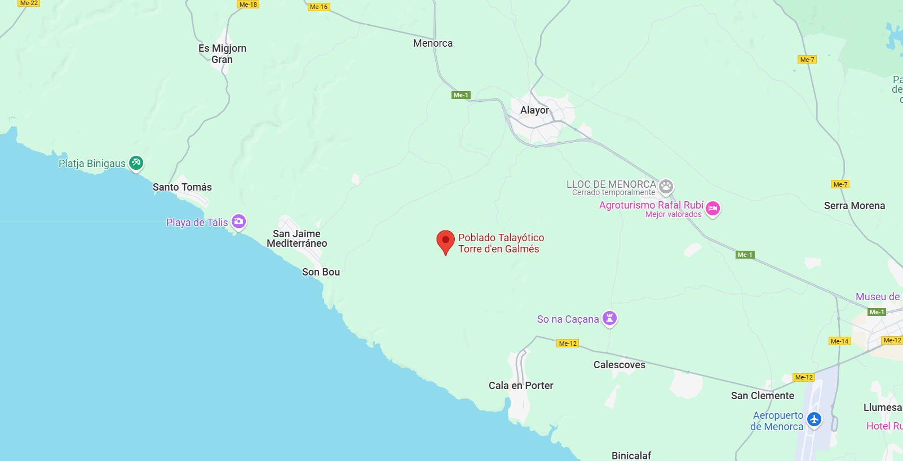

Descripció
Cova funerària amb eines, ornaments i altres objectes rituals, que mostra influències culturals.
Ubicació
El poblat talaiòtic de Torre d'en Galmés es troba a poc més de 5 km al sud de la població d'Alaior.

Imatges